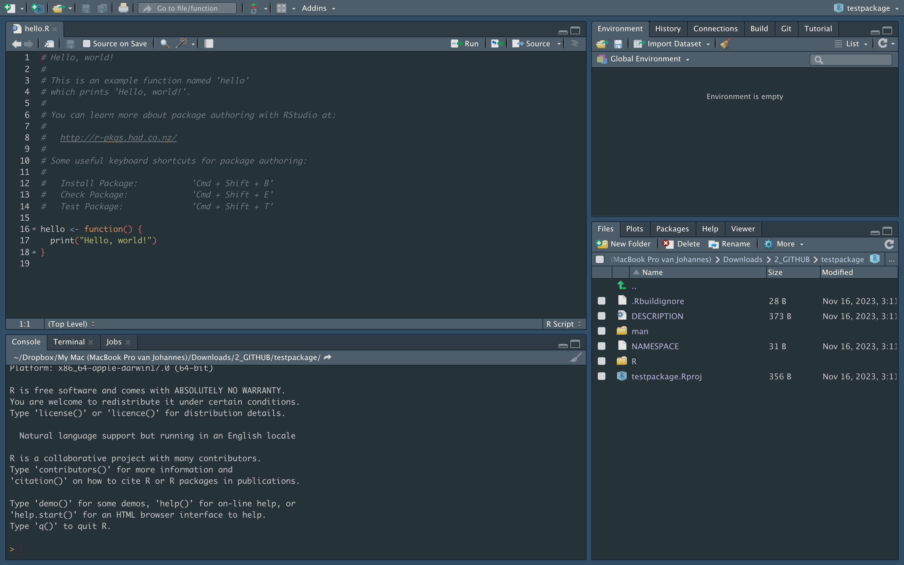
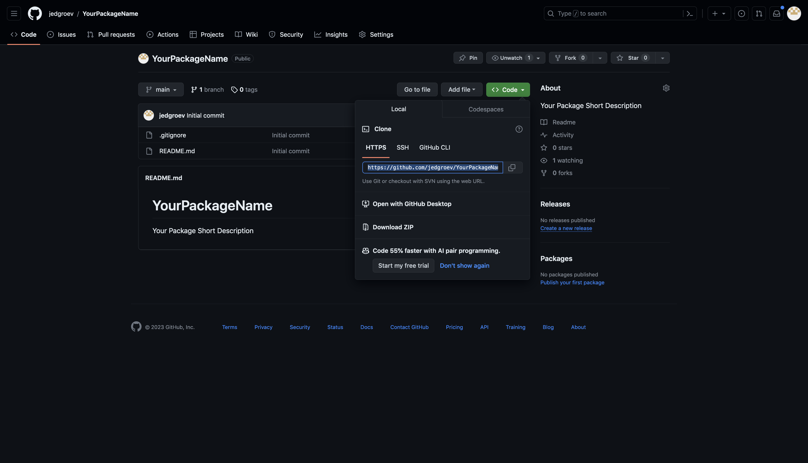

R package
1 Introduction
R packages give you a structure to organize your code (and data) in a structured and standardized manner. In essence, an R package is a hyper-organized R project of functions. A first tip, whether you want to create an R package or not, it is always a beneficial to organize analyses that are part of a single work-package (e.g. publication, presentation) into an R project (and to use functions for tasks that can be repeated). A prerequisite to facilitate creating an R package is basic knowledge of rstudio-GUI. While RStudio is not necessary to create an R package, it really makes it much easier.
Before digging into the subject here is an short overview of the rstudio GUI and a list of necessary packages that will help you with building your first R package.
1.1 Rstudio panels
- editor
- console, terminal, R markdown, jobs
- files, plots, packages, help, viewer
- environment, history, connections, build, git, tutorial

To learn more in detail about project management with RStudio and Rmarkdown please have a look at the following precious resources:
2 Creating a basic R package
In this section, we’ll guide you through the process of creating a basic R package using the devtools package.
2.1 Create the package repository structure
To initiate your R package, start by creating the necessary directory structure.
In the RStudio menu, navigate to File -> New Project -> New Directory -> R package -> name and replace “name” with the desired name for your package.
2.2 Adding functions
Once your package structure is set up, you can add functions to it. Open an R script in the R/ directory and include your desired functions. Here, we’ve added two temperature conversion functions as examples:
2.3 Load R package
To test your functions within the package, load it into your R environment using one of the following methods:
- Execute
devtools::load_all()in the R console. - Use the shortcut command/ctrl + shift + L.
- Navigate to
Build -> Load Allin the RStudio menu.
2.4 Exercise
Create a minimum viable R package manually including:
1) Package Directory (SCC_R_package)
2) R-directory (SCC_R_package/R)
3) Functions (SCC_R_package/R/functions.R)
4) Description-file (SCC_R_package/DESCRIPTION)
5) Load package with load_all()
6) Try the functions and check documentation (e.g., ?F_to_C)In the upcoming sections, we’ll delve into further details on documentation, testing, and package building. This initial setup lays the foundation for developing a well-organized and functional R package.
3 Document with Roxygen
When seeking assistance in R, the use of a question mark followed by a function (e.g., ?table) guides you to a help page containing documentation for that specific function. This documentation is a crucial component that you need to create when constructing your own package, and it can be seamlessly added using Roxygen tags. To illustrate, consider the following straightforward example:
#' @title C_to_F
#'
#' @description function to convert Celcius to Farenheit
#'
#' @param C_temp numeric value expressing the temperature in degrees Celcius
#'
#' @return
#'
#' @export
#'
C_to_F <- function(C_temp){
F_temp <- (C_temp * 9/5) + 32;
return(F_temp);
}The tags are identified by #' followed by the @ symbol and the tag identifier (e.g. #' @title). It is generally advisable to include essential tags such as @title, @description, @param, and @return, and then add supplementary tags as per the documentation needs (see Table 1 for an overview). After incorporating Roxygen tags, the document() function can be used to generate the requisite manual, embedding the documentation. See below for a step-by-step guide.
Table 1. Roxygen Tags Overview ordered by importance and relevance
| tag | description |
|---|---|
| @title | Provides a short, one-line description of the purpose of the documented object. |
| @description | Offers a more detailed description of the documented object. This tag is important for providing comprehensive information about the function or object. |
| @param | Documents function parameters. Each parameter is typically documented using a separate @param tag, providing details such as the parameter name, type, and description. |
| @return | Describes the return value of a function. Similar to @param, it includes details like the type of the return value and a description. |
| @examples | Provides examples of how to use the function or code block. Examples are crucial for users to understand how to apply the code in practical situations. |
| @author | Specifies the author(s) of the code. It’s a good practice to give credit to those who contributed to the code. |
| @seealso | Links to other related functions or documentation. This tag helps users find additional relevant information. |
| @details | Offers additional details or information that might be important for users to understand the inner workings or special considerations related to the documented object. |
| @import | Indicates the packages that need to be imported for the code to run successfully. This is important for users to know which dependencies are required. |
| @source | Specifies the source of the code. This can be useful for giving credit or referencing the origin of the code. |
| @references | Provides references or citations related to the code. This is especially important for academic or research-oriented code. |
| @export | Indicates that a particular function or object should be exported when the package is loaded. This is essential for package development. |
| @keywords | Specifies keywords related to the code. This can aid in searching and categorizing the code. |
| @inheritParams | Indicates that the documented function inherits parameters from another function. This can be useful when functions share similar parameter sets. |
3.2 Document your functions
Document these functions by adding roxygen tags (@param, @return, @examples, @export, @details, @description, @name) to each function.
To quickly add the roxygen skeleton, put the pointer within a function and then:
- Use the shortcut option/alt + shift + command/ctrl + R.
- Navigate to
Code -> Insert Roxygen Skeletonin the RStudio menu.
#' @Title C_to_F
#'
#' @param C_temp
#'
#' @return
#'
#' @export
#'
#' @examples
#' # Convert Celcius to Farenheit
#' F <- C_to_F(20)
#'
#' # Convert Celcius to Farenheit, but avoid running it for tests
#' \dontrun {
#' F <- C_to_F(20)
#' }
#'
#'
C_to_F <- function(C_temp){
F_temp <- (C_temp * 9/5) + 32;
return(F_temp);
}NOTE
The \dontrun tag is useful when an example should not be automatically executed. This can be necessary for examples that may have side effects, such as downloading large datasets or creating time-consuming computations. How to Use not run: simply include \dontrun{} in the example you want to exclude from automatic execution.
3.3 Document package
The function document() will automatically create the documentation of the function.
- Execute
devtools::document()in the R console. - Use the shortcut command/ctrl + shift + B.
Finally, use load_all() to reload your package locally
If you inspect the function F_to_C you will see that documentation is now available.
3.4 Exercise
We have now documented the function C_to_F by adding the roxygen tags.
Use the same approach to document the F_to_C function. 4 Add Data
Adding data to your package enhances its functionality and ensures that users have access to essential datasets. The use_data() and use_data_raw() functions simplify the workflow of saving package data in the correct format. Also for data sets various Roxygen tags can be used to add documentation. Follow these steps to include datasets in your package:
4.1 Create data-raw directory
The use_data_raw() function sets up a directory named data-raw and includes a template R-script, DATASET.R. This directory could also be used to add your original datasets.
4.3 Edit DATASET.R
Edit DATASET.R to load and format the dataset, saving it as a suitable .rda file using the usethis::use_data() function.
# example of a created dataset
date <- as.Date('2023-09-01')
timestamp <- seq(date,date + 30,1)
celcius <- sample(seq(10,20,0.1),length(timestamp))
temperatures <- data.frame(timestamp=timestamp,celcius=celcius)
# create a data directory and store the rda file with use_data()
usethis::use_data(temperatures, overwrite = TRUE)4.4 Document your dataset
In the R/ directory, document your dataset using Roxygen tags. Include essential information such as @name, @description, @format, @source, and variable details. Good practice is to create an R script named data in which you document your datasets.
# example
#' name Prices of 50,000 round cut diamonds.
#'
#' A dataset containing the prices and other attributes of almost 54,000
#' diamonds.
#'
#' @format A data frame with 53940 rows and 10 variables:
#' \describe{
#' \item{price}{price, in US dollars}
#' \item{carat}{weight of the diamond, in carats}
#' }
#' @source \url{http://www.diamondse.info/}
diamonds 4.5 Exercise
Document above created `temperatures` data frame using the Roxygen-tags:
@name, @description, @format and @source.
Make sure to describe each column of the data frame. 5 Add Vignettes
It is a good idea to add extra detailed documentation of the usage of the R package as vignettes. Vignettes are in essence R markdown files with a specific header. To extend your R package with vignettes use the function below.
6 Unit tests with testthat
In the R programming language, the testthat package is widely used for unit testing. It provides a simple and expressive framework for writing and running tests, making it an essential tool for ensuring the correctness of your code.
6.1 Install and Load testthat
If you haven’t installed the testthat package, you can do so using the following command:
After installation, load the package in your R script or RStudio session:
6.2 Create a Test File
Create a separate directory within your package for tests, typically named “tests”. Inside this directory, create a new R script for your tests. The function use_testthat() facilitates this by creating a standard structure for your tests.
6.3 Writing Your First Test
To write your first test let’s use the function use_test(). This will automatically create a file test-tests.R in the directory tests/testthat and adds a test.
You will see that the following simple test has been added to the file. In this example test_that() is used to define a test case and expect equal checks if the result of 2 * 2 is equal to 4.
Applied on a function in your package this would look as follows. Let’s assume you have a simple function called add_numbers in your package that adds two numbers. Here’s an example of how you might write a test for it.
6.4 Run Your Tests
To run your tests, you can use the function test_file() which will execute all the tests defined in the specified file.
To run tests specifically for your R-package you can use the test function in devtools.
6.5 Assertions and Matchers
testthat provides various assertions and matchers to test different conditions. Here are some examples:
| Assertion/Matcher | Description |
|---|---|
expect_equal(object, expected) |
Test if object is equal to expected. |
expect_identical(object, expected) |
Test if object is identical to expected. |
expect_equivalent(object, expected) |
Test if object is equivalent to expected (ignoring attributes). |
expect_not_equal(object, unexpected) |
Test if object is not equal to unexpected. |
expect_not_identical(object, unexpected) |
Test if object is not identical to unexpected. |
expect_not_equivalent(object, unexpected) |
Test if object is not equivalent to unexpected (ignoring attributes). |
expect_true(condition) |
Test if condition is TRUE. |
expect_false(condition) |
Test if condition is FALSE. |
expect_null(object) |
Test if object is NULL. |
expect_not_null(object) |
Test if object is not NULL. |
expect_error(expr) |
Test if evaluating expr produces an error. |
expect_warning(expr) |
Test if evaluating expr produces a warning. |
expect_length(object, expected_length) |
Test if the length of object is equal to expected_length. |
expect_is(object, class) |
Test if object is an instance of the specified class. |
expect_match(object, pattern) |
Test if object matches the specified regular expression pattern. |
expect_output(expr, expected_output) |
Test if evaluating expr produces the expected output. |
expect_gt(x, y) |
Test if x is greater than y. |
expect_lt(x, y) |
Test if x is less than y. |
expect_ge(x, y) |
Test if x is greater than or equal to y. |
expect_le(x, y) |
Test if x is less than or equal to y. |
expect_setequal(set1, set2) |
Test if the sets set1 and set2 are equal. |
expect_list_equal(list1, list2) |
Test if the lists list1 and list2 are equal. |
expect_true(file.exists(path)) |
Test if a file exists at the specified path. |
expect_true(file.size(path) > 0) |
Test if a file at the specified path is not empty. |
Refer to the testthat documentation for a complete list of assertions and matchers: https://testthat.r-lib.org/
6.6 Exercise
1. create the above function add_numbers, including roxygen tags
2. add the above test of the function
3. run the test with devtools::test()7 Build
Once your package is ready, you can build your package using devtools::build() which will create a tarball (a compressed archive) of your package in the ./pkg/ directory.
Before building, it’s a good idea to check your package for common issues using devtools::check(). The latter function performs a series of checks to ensure that your package meets certain standards and is ready for distribution. These checks help ensure the overall quality, consistency, and compliance of your R package with best practices and standards. It’s recommended to address any issues reported during the devtools::check() process before submitting your package to CRAN or sharing it with others.
Here are some of the key checks that devtools::check() performs:
| check | description |
|---|---|
| R CMD check | This is a comprehensive set of checks performed by the R CMD check command. It includes various sub-checks for code syntax, documentation, and package structure. It ensures that your package adheres to the standards set by the R community. |
| R CMD build | Checks are made to ensure that your package can be successfully built into a tarball (compressed archive). |
| R CMD INSTALL | Installs your package locally to check for installation issues. |
| Package dependencies | Checks that the dependencies declared in the DESCRIPTION file are available and can be installed. |
| CRAN checks | Checks specific to CRAN (Comprehensive R Archive Network) submission requirements. These include checks for package licensing, proper use of URLs, and other guidelines specified by CRAN. |
| Namespace checks | Verifies that your package namespace is properly defined and does not have any conflicts. |
| Code style and best practices | Checks for adherence to coding style conventions, as recommended by the R community. |
| Documentation checks | Verifies that the documentation is correctly formatted and that all exported functions are documented. |
| Examples checks | Runs examples provided in the documentation to ensure they work as intended. |
| Vignette checks | If your package includes vignettes, it checks that they can be built without errors. |
| Unit tests | If you have unit tests in your package, they are executed to ensure that your functions work as expected. |
| License checks | Verifies that your package has a valid license specified in the DESCRIPTION file. |
| Encoding checks | Checks that your source code files use a consistent and valid character encoding. |
7.1 Check your package
Check makes a list of checks to test the validity of your package. Use one of the following approaches to run the checks:
- Execute
devtools::check()in the R console. - Use the shortcut shift + command/ctrl + E.
- Navigate to
Build -> Check Packagein the RStudio menu. - Navigate to the
Buildpanel and clickCheckin upper-right panel
Address any issues that arise during the checking process.
7.2 Build your package
Once your package is ready, you can build your package. Use one of the following approaches:
- Execute
devtools::build()in the R console. - Execute
R CMD build YourPackageNamefrom the directory in which your package is stored, andYourPackageNameis the R Package directory name. - Use the shortcut command/ctrl + shift + B
- Navigate to
Build -> Build Packagein the RStudio menu.
This will create a tarball (a compressed archive) of your package in the ./pkg/ directory.
7.3 Install and load your package
You can install your package locally for testing using:
Replace “path/to/YourPackageName_x.y.z.tar.gz” with the actual path to your package tarball.
7.4 Buildignore
To ignore including certain files or directories modify the buildignore file. This will exclude specific directories when building your package. For instance, you might want to ignore the raw-data directory, since you will not need it for the functioning of your R package.
7.5 Exercise
1. Adjust the buildignore file and add the raw-data directory
2. Exclude any other directory that is not necessary
3. perform checks and correct issues
4. build package and search for the zipped file
5. install package 8 Git
Imagine you have a piece of code, and you’re keen on tracking its changes without losing the original version. The conventional method involves saving scripts as new files, often labeled with indicators like ‘v0’ or a timestamp. Git offers a more seamless way to version your code without the hassle of managing different version files manually. It not only tracks changes made to your files but also equips you with tools to document those changes. While Git’s initial development focused on code versioning, it’s versatile enough to handle smaller datasets. GitHub and GitLab support various text file formats (e.g., csv, fasta), making them ideal for versioning.
This section unfolds a step-by-step guide to (1) initiate a new project on GitHub or GitLab, (2) integrate it with your RStudio, and (3) employ basic git commands for effective version control. Although the example uses GitHub, the process is nearly identical for GitLab.
8.1 Create a new repository
Navigate to the GitHub or GitLab website and create a new project with a given name (YourPackageName). Include a README file during the initialization process and specify other optional settings (public/private, licensing, description).


8.2 Copy repository link
Copy the HTTP link of your repository https://github.com/<YourAccount>/<YourPackageName>.git as shown in the figure below.

8.3 Set up repository in RStudio
Open RStudio and choose File -> New Project -> Version Control -> Git. Paste the Repository URL and specify the Project directory name (YourPackageName).

8.4 Modify gitignore file
Once you created a git project a file that is automatically created is the .gitignore in the root directory of your project. This is a file in which you can specify which files and directories that should be ignored and thus should not be versioned or hosted in Github or Gitlab.
8.5 Make changes, commit and push
Once you have cloned the git repository you have the tools to version the files in your R package. To test this we can make changes into the README file and submit them to github/gitlab from within RStudio. There are several ways to submit changes in RStudio:
- Use the shortcut command/ctrl + option/alt + M
- Navigate to
Tools -> Version Control -> Commitin the RStudio menu. - Navigate to the
Gitin upper-right panel in RStudio and click theCommitbutton.
A new window pops up in which you:
- Select the files to which you want to add the specific commit message.
- Add a message to describe the changes.
- Click
Committo submit the changes to Git. - Click
Pushto push the committed changes to the git repository.
Git can also be used from the terminal:
git add <filename>
git commit -m "commit message"
git push <branchname>NOTE: It is recommended to have pushed your changes by the end of the day, or when you stop working on a project. Before you start, the next day/moment/moment always make sure to first pull, to fetch changes made in GitHub or GitLab. Like that you ensure that both the online and local version remain synchronized.
Gitignore:
9 Building a website
In this section, you’ll learn how to create a YAML configuration file (_pkgdown.yml) for your R package using usethis::use_pkgdown(). We’ll also cover the importance of YAML files and the steps to build and view your package website.
9.1 Create YAML configuration
Run the following command to create the _pkgdown.yml file:
This command creates a basic YAML configuration file in your package directory.
9.2 Edit the _pkgdown.yml file
Open the generated _pkgdown.yml file and customize it according to your preferences. This file contains settings for your package website, including the destination, URL, and navigation bar.
Example _pkgdown.yml:
destination: public
url: https://<USERNAME>.gitlab.io/<REPOSITORYNAME>/
development:
mode: auto
navbar:
right:
- icon: fa-gitlab
href: https://gitlab.com/<USERNAME>/<REPOSITORYNAME>Adjust the destination and url fields with your GitLab or github username and repository name.
9.3 Build your package website
Ensure your package has a DESCRIPTION file and a README file. If not, run:
usethis::use_description()
usethis::use_readme_rmd()Then, generate your package website using:
This command creates a docs/ directory containing HTML files for your website.
9.4 Commit changes to Git
Before building the website, commit the changes to your Git repository:
Alternatively, commit using the approach as described in the GIT section.
9.5 Activate pages
9.5.1 GitHub pages activation
Go to your GitHub repository.
Navigate to the "Settings" tab.
Scroll down to the "GitHub Pages" section.
Set the "Source" branch to main or master (whichever branch you are using).
Confirm the activation.9.5.2 GitLab pages activation
The activation process for GitLab Pages can vary based on your GitLab instance and permissions. Typically, it involves:
Go to your GitLab repository.
Navigate to the "Settings" or "CI / CD" section.
Look for "Pages" settings.
Configure the Pages settings, including the source branch.Please refer to the specific documentation of your GitLab instance for detailed instructions.
10 Large file support (LFS)
Large file support comes in handy if you would like to include large files in your package without versioning. This means that every time a LFS-object is changed, a new version is uploaded without tracking previous changes. To allow LFS navigate to (https://git-lfs.com/)[https://git-lfs.com/] to download and install the git LFS extension.
10.1 Set up LFS
Once downloaded and installed, set up Git LFS for your user account by running:
git lfs installYou only need to run this once per user account.
10.2 Select file types
In each Git repository where you want to use Git LFS, select the file types you’d like Git LFS to manage (or directly edit your .gitattributes). You can configure additional file extensions at anytime.
git lfs track "*.html"10.3 Check .gitattributes
Now make sure .gitattributes is tracked:
git add .gitattributes11 Shortcuts
| MacOS / Windows | R command | Rstudio Menu |
|---|---|---|
| command/ctrl + shift + E | devtools::check() | build -> Check Package |
| command/ctrl + shift + B | devtools::build() | build -> Build Source Package |
| command/ctrl + shift + L | devtools::load_all() | build -> load all |
| command/ctrl + shift + D | devtools::document() | |
| command/ctrl + option/alt + M | Tools -> Version Control -> Commit | |
| command/ctrl + shift + C | Code -> Comment/Uncomment Lines | |
| option/alt + shift + command/ctrl + R | Code -> Insert Roxygen Skeleton |